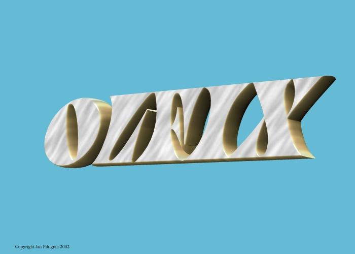
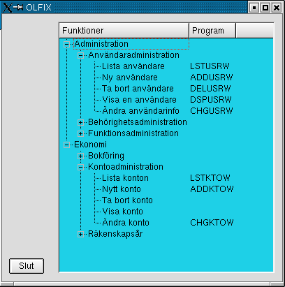
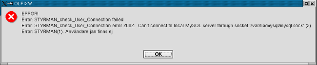
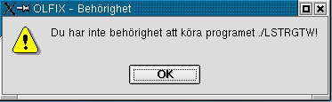

Order/Lager/Fakturering för Linuxsystem
Användarmanual
Kapitel Grunder
Version 0.1
2006-01-06
This program is free software; you can
redistribute it and/or modify
it under the terms of the GNU General Public License as published by
the Free Software Foundation; either version 2 of the License, or
(at your option) any later version.
Copyright 2006 Jan Pihlgren.
Innan du börjar. Att komma igång. Grunddata.
Förutsättningen för att kunna använda OLFIX är att
databasmotorn MySQL är installerad samt att databasdomänen är startad.
Detta sköter din databasadministratör om. Det bästa är om databasdämonen
alltid startas så fort datorn startar. Om du arbetar i ett närverk så
är det administratörens ansvar att se till att allt fungerar.
Innan du försöker använda OLFIX ska du kontrollera att du har filen
.olfixrc i ditt hemmabibliotek.
Observera att det är en punkt framför filnamnet, punkten är en del av
filnamnet.
Innehållet i filen ska se ut ungefär så här:
PATH=/opt/olfix/bin/
HOST=localhost
DATABASE=olfixtst
HELPFILE=/doc/helpfiles/usermanual/UserManual.html
REPORT=/opt/olfix/report/
VTMP=/tmp/
Värdet för DATABASE kan
skifta. Om det står olfixtst så
innebär det att du arbetar med testföretaget.
Om värdet är olfix så anger det
att du arbetar med det ”skarpa”, ordinarie företaget.
Detta är inte något du ska ändra själv.
Använd programmet BYTFTGW
för att byta databas/företag.
Med hjälp av en filhanterare letar du upp filen /opt/olfix/bin/OLFIXW. Dra den filen till skrivbordet och släpp. På frågan om kopiera mm väljer du länka. Därefter kan du klicka på ikonen OLFIXW på skrivbordet.
Du ska få upp följande bild:

Bild 1
Här kan du välja vilka program/funktioner du önskar använda.
Genom att klicka på enfunktion så startar detta program.
I bild 1 finns det +tecken och -tecken. Dessa expanderar respektive
krymper listan med funktioner.
Ifall du får upp nedanstående bild så är databasen inte igång/öppen.

Bild 2
Om du får upp en bild som liknar Bild 3:

Bild 3
får du vända dig till den person som administrerar ditt system så får denne ordna så du får rätt att använda programmet, behörighet till programmet.
Det första som måste göras innan man
kan använda OLFIX är att mata in grunddata.
Grunddata är t ex företagsuppgifter, användare, behörigheter, kontoplan
och räkenskapsår. Ett nytt räkenskapsår läggs upp med ADDBARW, användare
läggs upp med ADDUSRW, behörigheter med ADDRGTW och kontoplan läggs upp
med ADDKTOW.
OLFIX medger hantering av upp till 99
olika företag. Företag nr 99 är reserverat för testföretaget.
OLFIX levereras med ett ”skarpt” (ordinarie) företag (01) och ett
testföretag (99).
Artiklar
Artikeltyp 0 = Tillverkningsartikel som tillverkas mot lager.
Artikeltyp 1 = Tillverkningsartikel som ej tillveraks mot lager.
Artikeltyp 2 = Köpartikel som köps mot lager.
Artikeltyp 3 = Köpartikel som ej köps mot lager.
Artikeltyp 4 = Tjänst.
Grundvärde = 0
Artikelstruktur
Blank = ingår ej i struktur.
B = Bottenartikel.
I = Ingår "mitt" i artikel.
T = Toppartikel.
F = Fantom, ingår "mitt" i artikel, ej fysisk artikel.
Grundvärde = blank.
Till början
Bokföringsår: Tvåställig bokstavskombination som anger vilket
bokföringsår som avses.